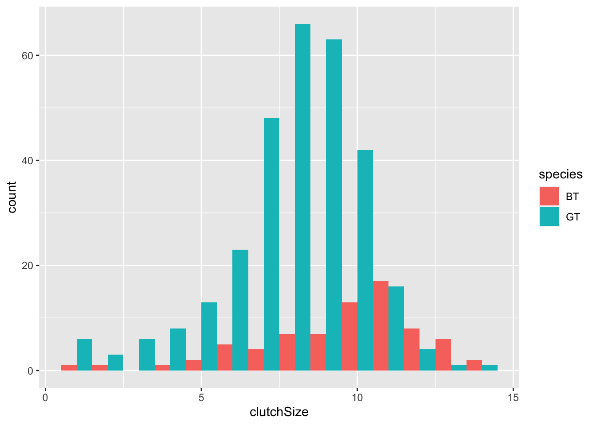
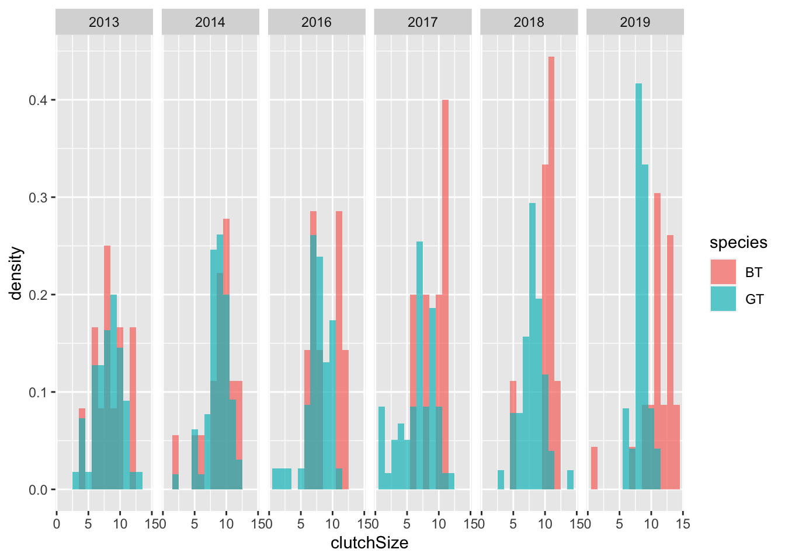
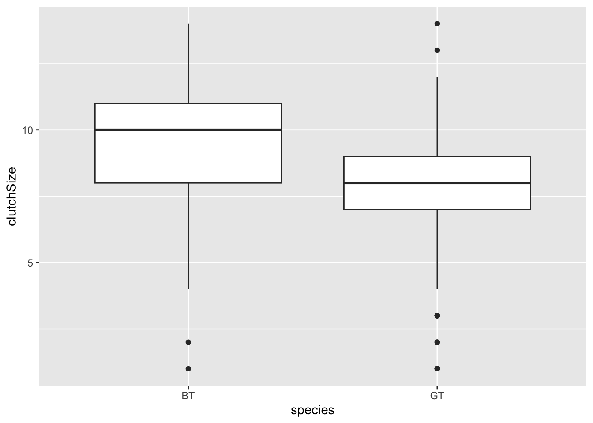

Chapter 6 Distributions and summarising data
6.1 Introduction
This worksheet covers two broad topics. First it covers the concept of distributions; Secondly it covers summarising data. We’ll use some functions from the tidyverse so you should load those libraries before continuing.
library(tidyverse)6.2 Distributions
A statistical distribution is a description of the relative number of times (frequency) possible outcomes will occur in many trials. They are important because (1) they are useful descriptors of data and (2) they form the basis for assumptions in some statistical approaches. For example, normal distribution is often assumed. The normal distribution is symmetrical (centered on the mean) and 68% of observations fall within 1 standard deviation, and 95% of observations fall within 2 s.d..

We will use R to simulate some distributions, and explore these to get a feel for them.
R has functions for generating random numbers from different kinds of distributions. For example, the function rnorm will generate numbers from a normal distribution and rpois will generate numbers from a Poisson distribution.
6.3 Normal distribution
The rnorm function has three arguments. The first argument is simply the number of values you want to generate. Then, the second and third arguments specify the the mean and standard deviation values of the distribution (i.e. where the distribution is centered and how spread out it is).
The following command will produce 6 numbers from a distribution with a mean value of 5 and a standard deviation of 2.
rnorm(6,5,2)## [1] 6.546567 5.868989 7.427407 2.799911 6.036900 4.607270Try changing the values of the arguments to alter the number of values you generate, and to alter the mean and standard deviation.
Let’s use this to generate a larger data frame, and then place markers for the various measures of “spread” onto a plot. Note that here I put a set of parentheses around the plot code to both display the result AND save the plot as an R object called p1
rn <- data.frame(d1 = rnorm(500,5,2))
summary(rn) #Take a look## d1
## Min. :-0.04319
## 1st Qu.: 3.80221
## Median : 4.98292
## Mean : 5.05574
## 3rd Qu.: 6.29106
## Max. :10.73554#Plot the data
(p1 <- ggplot(rn,aes(x=d1)) +
geom_histogram()
)
We can calculate the mean and standard deviation using summarise (along with other estimates of “spread”). The mean and standard deviation values will be close (but not identical) to the values you set when you generated the distribution.
Note that here I put a set of parentheses around the code to both display the result AND save the result in an object called sv
(sv <- rn %>%
summarise(meanEst = mean(d1),
sdEst = sd(d1),
varEst = var(d1),
semEst = sd(d1)/sqrt(n()))
)## meanEst sdEst varEst semEst
## 1 5.055737 2.000436 4.001743 0.0894622Let’s use the function geom_vline to add some markers to the plot from above to show these values…
(p2 <- p1 +
geom_vline(xintercept = sv$meanEst, size=2) + #mean
geom_vline(xintercept = sv$meanEst+sv$sdEst, size=1) + #upperSD
geom_vline(xintercept = sv$meanEst-sv$sdEst, size=1) #lowerSD
)
We can compare these with the true values (the values we set when we generated the data), by adding them to the plot in a different colour (mean=5, sd=2).
(p3 <- p2 +
geom_vline(xintercept = 5, size=2, colour="red") + #mean
geom_vline(xintercept = 5+2, size=1,colour="red") + #upperSD
geom_vline(xintercept = 5-2, size=1,colour="red") #lowerSD
) 
Try repeating these plots with data that has different sample sizes. For example, use sample sizes of 5000, 250, 100, 50, 10. What do you notice? You should notice that for smaller sample sizes, the true distribution is not captured very well.
When you calculate the mean and standard deviation, you are actually fitting a simple model: the mean and sd are parameters of the model, which assumes that the data follow a normal distribution.
Try adding lines for the standard error of the mean to one of your histograms.
6.4 Compare normal distributions
Because normal distributions all have the same shape, it can be hard to grasp the effect of changing the distribution’s parameters viewing them in isolation. In this section you will write some code to compare two normal distributions. This approach can be useful when considering whether a proposed experiment will successfully detect a difference between treatment groups. We’ll look at this topic, known as “power analysis”, in greater detail in a later class. For now we will simply use ggplot to get a better feel for the normal distribution.
Let’s use rnorm to generate a larger data frame with two sets of numbers from different distributions: (d1: mean = 5, sd = 2; d2: mean = 8, sd = 1).
rn <- data.frame(d1 = rnorm(500,5,2),d2 = rnorm(500,8,1))
summary(rn)## d1 d2
## Min. :-1.703 Min. : 5.375
## 1st Qu.: 3.724 1st Qu.: 7.289
## Median : 4.960 Median : 7.969
## Mean : 5.008 Mean : 7.957
## 3rd Qu.: 6.230 3rd Qu.: 8.643
## Max. :11.436 Max. :10.773The summaries (above) show that the mean and the width of the distributions vary, but we should always plot our data. So lets make a plot in ggplot. In the dataset I created I have the data arranged by columns side-by-side, but ggplot needs the values to be arranged in a single column, and the identifier of the sample ID in a second column. I can use the function gather to rearrange the data into the required format.
rn <- gather(rn,key = "sampleID",value = "value") #rearrange data
#Plot histograms using "identity", and make them transparent
ggplot(rn,aes(x = value,fill=sampleID)) +
geom_histogram(position = "identity", alpha=0.5)
Try changing the distributions and replotting them (you can change the number of samples, the mean values and the standard deviations).
6.5 The Poisson distribution
The Poisson distribution is typically used when dealing with count data. The values must be whole numbers (integers) and they cannot be negative. The shape of the distributions varies with the “lambda” parameter. Small values of lambda give more skewed distributions.

Let’s generate and plot some Poisson distributed data.
rp <- data.frame(d1 = rpois(500,2.4))
summary(rp) #Take a look## d1
## Min. :0.00
## 1st Qu.:1.00
## Median :2.00
## Mean :2.41
## 3rd Qu.:3.00
## Max. :7.00#Plot the data
(p1 <- ggplot(rp,aes(x=d1)) +
geom_histogram(binwidth = 1) # we know the bins will be 1
) Try changing the value of lambda and look at how the shape changes.
Try changing the value of lambda and look at how the shape changes.
Let’s calculate summary statistics of mean and standard deviation for this distribution
(sv <- rp %>%
summarise(meanEst = mean(d1),
sdEst = sd(d1))
)## meanEst sdEst
## 1 2.41 1.570616Now lets plot the mean and the 2 times the sd on the graph. Remember that for the normal distribution (above) that 95% of the data were within 2 times the sd.
p1 +
geom_vline(xintercept = sv$meanEst, size=2) + #mean
geom_vline(xintercept = sv$meanEst+2*sv$sdEst, size=1) + #upper2SD
geom_vline(xintercept = sv$meanEst-2*sv$sdEst, size=1) #lower2SD
This looks like a TERRIBLE fit: The mean is not close to the most common value in the data set and the lower limit of the s.d. indicates we should expect some negative values - this is impossible for Poisson data. The reason for this is that mean and standard deviation, and therefore standard error, are intended for normally distributed data. When the data come from other distributions we must take another approach.
So how should we summarise this data?
One approach is to report the median as a measure of “central tendency” instead of the mean, and to report “quantiles” of the data along with the range (i.e. minimum and maximum). Quantiles are simply the cut points that divide the data into parts. For example, the 25% quantile is the point where (if the data were arranged in order) one quarter of the values would fall below; the 50% quantile would mark the middle of the data (= the median); the 75% quantile would be the point when three-quarters of the data are below. You can calculate those things using dplyr’s summarise. However, you can also simply use the base R summary command.
(sv <- rp %>%
summarise(minVal = min(d1),
q25 = quantile(d1,0.25),
med = median(d1),
q75 = quantile(d1,0.75),
maxVal = max(d1))
)## minVal q25 med q75 maxVal
## 1 0 1 2 3 7#base R summary is just as good.
summary(rp$d1)## Min. 1st Qu. Median Mean 3rd Qu. Max.
## 0.00 1.00 2.00 2.41 3.00 7.006.6 Comparing normal and Poisson distributions
To get a better feel for how these two distributions differ, lets use the same approach we used above to plot two distributions together.
rn <- data.frame(normDist = rnorm(500,2,2),poisDist = rpois(500,2.4))
summary(rn)## normDist poisDist
## Min. :-3.7862 Min. :0.000
## 1st Qu.: 0.5507 1st Qu.:1.000
## Median : 1.7944 Median :2.000
## Mean : 1.9137 Mean :2.346
## 3rd Qu.: 3.3323 3rd Qu.:3.000
## Max. : 7.7925 Max. :8.000rn <- gather(rn,key = "sampleID",value = "value") #rearrange data
#Plot histograms using "identity", and make them transparent
ggplot(rn,aes(x = value,fill=sampleID)) +
geom_histogram(position = "identity", alpha=0.5,binwidth = 1)
Try changing the arguments in the rnorm and rpois commands to change the distributions.
Finally, let’s take another view of these data and look at them using box plots. Box plots are a handy alternative to histograms and many people prefer them.
ggplot(rn,aes(x=sampleID, y = value,fill=sampleID)) +
geom_boxplot()You should see the main features of both distributions are captured pretty well. The normal distribution is approximately symetrical and the Poisson distribution is skewed (one whisker longer then the other) and cannot be <0. Which graph to you prefer? (there’s no right answer!)